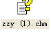
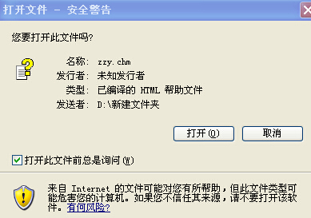
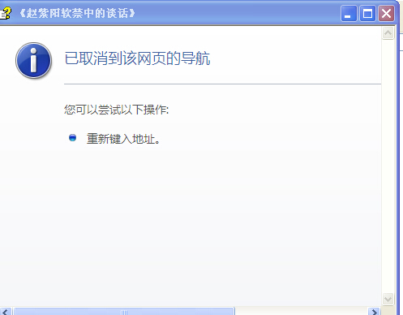

Conversation with 81184027 at Wed 20 Aug 2014 10:21:17 PM CST on 154115835 (webqq)
(10:23:39 PM) 光: http://www.aisixiang.com/data/29074.html
(10:23:45 PM) 光: 这个不是书啊
(10:23:47 PM) 光: 是文章
(10:23:53 PM) 光: 前面那个
(10:24:18 PM) 光: 我上传到tower 另外建立一个图书分享组
(10:28:34 PM) 福建-福州&水浒: 好
(10:25:30 PM) 光: 嗯
(10:31:15 PM) 光: ok已上传
(10:36:03 PM) 福建-福州&水浒: 没看到呀
(10:33:09 PM) 光: 找找看
(10:33:16 PM) 光: 板块：图书分享
(10:33:23 PM) 光: 然后就一个文件
(10:36:31 PM) 福建-福州&水浒: 我是说网站我找不到了
(10:33:31 PM) 光: ok
(10:36:41 PM) 福建-福州&水浒: 我还没进网站
(10:33:46 PM) 光: https://tower.im/projects/54215cd767b740fd82c1a60459665acf/uploads/a7dbf3febef54a309683647215a84c64/
(10:33:50 PM) 光: 点这个
(10:37:12 PM) 福建-福州&水浒: 嗯
(10:34:07 PM) 光: 嗯
(10:36:04 PM) 光: 集体主义是支持专制主义的又一个强大力量。中国传统文化中从来没有“个人主义”的观念，就同根本没有“自由”与“人权”的观念一样。虽然战国时候有个“杨朱为我”，但是其思想从未发育成一种有效的政治、伦理思想，而且很快就被孟子挖他同墨子一起斥为“无父无君，是禽兽也”，骂倒了。“大公无私”，“为集体而牺牲个人”，一直到文化大革命中的“狠斗私字一闪念”，好象谁都认为是高尚的道德行为。“识大体，顾大局”更是被认为是高贵的情操，然而就在这种情操之中，人都变成了奴隶。上面所说的风阳县小岗村十八户农民决定摆脱人民公社的严酷束缚，自己谋一条生路而按血手印决定分田单干的时候，他们是自觉地在“犯罪”。二十多年过去了，他们开辟的道路给改革开放带来了巨大的成绩，而中国的知识分子居然还没有人把他们的行为所代表的理性的力量作出像样的总结。
(10:36:15 PM) 光: 要推到专制主义
(10:36:28 PM) 光: 集体主义就是一个拦路虎
(10:36:55 PM) lost message from #203167 to #203167
(10:40:02 PM) 福建-福州&水浒: 
(10:40:06 PM) 福建-福州&水浒: 打开没东西
(10:37:14 PM) 光: 我linux下看过了
(10:37:16 PM) 光: 有内容啊
(10:40:27 PM) 福建-福州&水浒:
(10:40:42 PM) 此去经年: 不知道什么 :sweat:
(10:40:44 PM) 福建-福州&水浒:
(10:37:45 PM) 光: 是啊
(10:40:56 PM) 福建-福州&水浒: 没有
(10:37:55 PM) 光: 我下载下来看看
(10:41:03 PM) 福建-福州&水浒: 我电脑问题？
(10:41:22 PM) 福建-福州&水浒: 不对呀，今天刚消了毒呀
(10:39:28 PM) 光: 可以啊
(10:39:40 PM) 光: 就是文件格式挺差的
(10:39:43 PM) 光: 做的很差
(10:39:54 PM) 光: 我在linux下看到内容了
(10:43:09 PM) 福建-福州&水浒: 
(10:43:17 PM) 福建-福州&水浒: 
(10:43:19 PM) 福建-福州&水浒: :L
(10:40:13 PM) 光: 嗯
(10:40:19 PM) 光: 你要点里面的
(10:40:22 PM) 光: 直接看看不到
(10:40:50 PM) 光: 你找找有没有chm格式转化的软件
(10:44:00 PM) 福建-福州&水浒: :撇嘴:
(10:40:59 PM) 光: 直接把chm转成网页
(10:41:01 PM) 光: 就可以看到了
(10:44:14 PM) 福建-福州&水浒: 哦
(10:41:08 PM) 光: 嗯
(10:44:16 PM) 福建-福州&水浒: 行
(10:43:15 PM) 光:
赵紫阳（一九一九 —— 二○○五），中共建国后第二代政治家。於文革之后进入中央领导层，先后出任国务院总理、中共中央总书记，成为中国社会空前的转型期的领导人。在任十年，推行「改革开放」路线，奠定今日中国经济崛起的基础.赵紫阳的政治生涯在一九八九年骤然结束。在当年的北京学运及六四事件中，他一反共产党的传统，站在学生一边，反对武力镇压而被党内元老派罢黜。那年他七十岁.
在其后长达十六年的晚境中，赵紫阳遭到严厉的软禁，被剥夺一位公民和党员应有的政治权利和人身自由直至病逝。在此期间，赵紫阳对他的经历，国家和党的历史、政策乃至意识形态，作了深刻的回顾与反省。这些反思的成果，透过他的一位同乡和挚友宗凤鸣先生记录下来。宗凤鸣比赵紫阳小三个月，他们在日本入侵的少年时代，投身中共革命，长期在中原地区共同工作。一九四九年后，宗转入科技部门，曾任航空航天大学党委领导，从国家体改委顾问职位离休。对八九学运和赵紫阳命运的同情，使他成为赵软禁中的常客。他以「气功师」的名义，从一九九一年起，至二○○四年，探望赵紫阳上百次。两位经历了半个多世纪残酷斗争的老战友，在北京富强胡同的院子里，解除心障，探讨真理。每次谈话由宗凤鸣记录整理。
回忆录作为知名的从政者向历史告别的一份交待，在封闭的极权体制中，尚未形成惯例。共产党的领袖们，在位时紧张得天天吃安眠药，自然无暇顾及；即使下台或退休后，也囿於主客观的种种局限，很难提笔着书。苏共在斯大林去世后失势的马林科夫、莫洛托夫等人都没有写回忆录，赫鲁晓夫在西方出版的口述回忆录，生前也不敢认帐。中共情况更为严峻，不仅毛泽东、周恩来、刘少奇等一代巨头，没有留下任何正式的遗言，毛后邓小平、陈云、彭真等强人，也都没有留下可称为回忆录的文字。其他大量的「革命回忆录」都由官方写手制作，经审批而后出版，史料价值微乎其微。赵紫阳在软禁中有意记下若干往事，不只一个人建议他写回忆录。他也曾向当局要求提供有关他任职期间的（非机密）档案资料，以备参考，但遭到拒绝.因此，宗凤鸣整理的谈话录，就成为回忆录的一种替代方式。
这本谈话记录显示赵紫阳内心自省的深度和广度。八十年代激烈的中共高层权力斗争和政策分歧，特别是赵和邓小平、胡耀邦的三角关系，是书中多次阐述的话题.赵对传说纷纭的一系列事件提供证词，进而交待自己在八九年六四事件中的角色。这是研究八十年代中国真相的一份具权威性的材料。在对中共体制的历史回顾中，赵紫阳是毛时代以来，第一个毫不含糊地批判专政教条的中共领袖。他认为列宁关於无产阶级专政是通过最有威望的领袖来实现的论断，只会导致个人专政与专制制度。不放弃「无产阶级专政」，民主与法治便没有希望。但是，赵的一切判断更多的是来自数十年的政治实践，尤其在经济领域，他对中外管理体制的熟悉与研究，处处可见。他主张政策的依据只能是实效和民意，而不是理论，更不是什么终极的目标。他在软禁中坦承，他已从过去「经济的改革者，政治的保守者」开始转变。赵紫阳晚年的世界观，显然已经很大程度地从中共正统转向认同当代普世的价值标准，推崇民主、法治、人权，还政於民。对中共数十年的苛政，他有痛心的忏悔：「我们欠老百姓的太多了。」基於对国情的忧虑，他不赞成政治上激进的西方化。
宗凤鸣不仅是赵紫阳谈话的记录者，也是赵与外部世界的联络者，他不断地给赵提供最新的各种资讯，并听取赵的评论。我们可以看到赵对软禁期间国内外重大事件及知名人物，包括中共各届领导人的直率看法。赵紫阳一改身居高位时的谨言慎行，平静而有条不紊地侃侃而谈，经验与睿智、胆略与习惯的话语分寸交织。这是历史提供的一个仅存的空间，让中共权力链接上，一个将永远消失的世代——以胡耀邦、赵紫阳为代表的、有使命感也有国际观的一代得以表露他们被扼杀的抱负。
(10:43:19 PM) 光: 内容都是有的
(10:51:46 PM) lost message from #203199 to #203201
(10:54:53 PM) 此去经年: 4型里面主要是 INFJ INFP ENFJ ISFP:强:
(10:55:50 PM) 光: 嗯
(10:57:53 PM) 光:
项羽之败的四点警醒
2008-3-3 来源：价值中国 作者：李健
核心提示：1、单打独斗永远战术：,4、虚心学习竞争对手的优点：,
较之《王立群读史记之汉武帝》，立群先生的新作《王立群读史记之项羽》，无论从内容的深度和厚度，还是从全书的结构布局以及逻辑性上，都逊色一筹。之中的原因，也许是搜集的资料不够，也许是对资料的解读不够深入，也许是出版社商业运作的介入缘故……
项羽是一个家喻户晓的名字，西楚霸王成就了霸业但没能成就帝业，因此，在回顾历史的时候，项羽在很大程度上都是“失败”的代名词，都是反面教材的典型人物。
姑且不论项羽霸业未成的真正原因是什么。这次山人读完之后，觉得项羽乃至楚汉争霸对于中国企业和中国企业家都有不少的借鉴和警醒意义，以下是山人个人的一家之言，供君赏鉴：
1、单打独斗永远<团队作战：
“一个好汉三个帮”这句古语在项羽和刘邦身上体现得淋漓尽致，前者是失败的淋漓尽致，后者是成功的淋漓尽致。君不见，刘邦身边人才济济，文有张良、陈平、萧何等，武有韩信、樊哙、彭越等，也正是这些文臣武将充分弥补了刘邦个人能力的不足，形成了很好的互补型团队，最终成就了帝业。而反观项羽，绝对是当时的单打冠军，名副其实的霸王，但身边真正拍得上用场的得力助手又有几人。我们能记住的好像只有“亚父”范增和“堂叔”项伯，前者说实话也不是什么高水平的谋士，后者更是“吃里爬外”，不下三次救助了深陷危机的“亲家”刘邦。
2、最高领导人永远应当戒骄戒躁：
项羽是霸业的创造者，同样也是霸业的摧毁者。由于自身能力超强，所以在项羽的眼中和心中几乎看不见能人，几乎看不到别人的长处。项羽的“不容逆耳”、“刚愎自用”、“心胸狭隘”、“所封不当”早就妇孺皆知。这里只想特别指出他性格上的一个致命弱点：易发怒。纵观《史记》，有关项羽的记载用得最多的两个词就是“怒”和“大怒”。整个《项羽本纪》只记载了项羽一生中只有一次笑，那就是乌江自刎前的仰天大笑。实际上，项羽身上的弱点同样在很多企业的创业者和最高管理者身上或多或少都有所体现。无论如何，即使昨日如何伟大，如何成功，都应当戒骄戒躁，永远不要成为自己企业明日成功的绊脚石。
3、战略永远>战术：
对照项羽和刘邦，项羽是一个缺乏战略大局观的人，而刘邦在张良等人的辅导下则通过步步为营，很好地实现了起初的战略布局。荥阳会战就是一个最典型的例子。在这场耗时28个月的楚汉争霸中最长的一场战役中，项羽的疲于奔命就是“只重战术、没有战略”和“注重一城一池，没有大局观念”的鲜明体现，虽然荥阳大战从表面上看是以项羽的胜利而告终，但是真正的胜利者却是刘邦，除了双方“中分鸿沟、楚河汉界”，韩信还控制了整个黄河以北的广大区域，形成从北面、东面包围项羽的态势，为最终的十面埋伏奠定了强有力的基石。
4、虚心学习竞争对手的优点：
论个人天赋，项羽应当强于刘邦。但为什么二流的刘邦最终战胜了一流的项羽，关键因素之一就是刘邦的“三善”：善听、善用、善赏罚。翻译成现代汉语，刘邦是一个从谏如流、善于倾听；能将合适的人放在合适岗位；奖赏分明的优秀领导人。而反观项羽，这三个要素上没有一项能得“及格分”。因此，最终的胜负可想而知了。这点同样适用于现代企业和企业家，重视竞争者研究，无论是系统的“对标”还是“竞争者分析”还是“竞争者情报收集”永远都应当是企业的一项重要工作。因为，知己知彼，方能百战不殆！
(10:58:12 PM) 光: 个人主义的项羽败给集体主义的刘邦
(10:58:33 PM) 光: 几千年的封建专制开始了